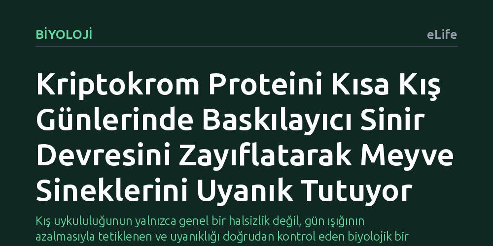

BIYOLOJI · eLife · 2026-10-09
Araştırmacılar, kış aylarındaki aşırı uyku eğiliminin sinirsel kökenini meyve sineklerinde inceledi. Kriptokrom adlı ışık algılayıcı proteinin, kış benzeri kısa günlerde baskılayıcı sinir iletimini zayıflatarak uyanıklığı artırdığı ve yokluğunda kış uykululuğunun belirginleştiği tespit edildi.
Kış uykululuğunun yalnızca genel bir halsizlik değil, gün ışığının azalmasıyla tetiklenen ve uyanıklığı doğrudan kontrol eden biyolojik bir sinir devresine bağlı olabileceğini gösteriyor.

Sonbahar ve kış aylarında günlerin kısalmasıyla birlikte pek çok insanda belirgin bir enerji düşüşü, yataktan çıkmakta zorlanma ve gün boyu süren bir rehavet hali baş gösterir. Tıpta mevsimsel duygu durum bozukluğu olarak adlandırılan kış depresyonunun en temel belirtilerinden biri aşırı uyku eğilimidir (hipersomni). Ancak kış aylarında artan bu uyku ihtiyacının yalnızca psikolojik bir isteksizlik mi yoksa gün ışığının azalmasına doğrudan yanıt veren biyolojik bir mekanizma mı olduğu sorusu uzun süredir yanıtsızdı.
Uyku ve uyanıklık dengesinin mevsimsel döngülere nasıl uyum sağladığını anlamak, hem kış depresyonunun doğasını kavramak hem de genel biyolojik saat mekanizmalarının sınırlarını görmek açısından büyük önem taşır. Eğer beyinde kış mevsimine özgü kısa gün koşullarında devreye giren özel bir uyanıklık devresi varsa, mevsimsel yorgunluğun ve uyku bozukluklarının kökeni hücresel ve sinirsel düzeyde açıklanabilir.
Araştırmacılar bu sorunun ardındaki mekanizmayı çözmek için biyolojik saat araştırmalarının temel model canlısı olan meyve sineklerine (Drosophila) yöneldi. Deney ortamında yapay ışık döngüleri ayarlanarak kış mevsimini taklit eden kısa gün koşulları oluşturuldu.
Deneylerde özellikle mavi ışığa duyarlı bir fotoreseptör olan kriptokrom (CRY) proteinine odaklanıldı. Genetik müdahaleyle kriptokrom geni devre dışı bırakılan mutant sinekler ile normal sinekler kısa kış günlerinde yan yana getirildi. Sineklerin uyku ve uyanıklık süreleri hassas takip sistemleriyle izlendi; aynı zamanda biyolojik saatin merkezinde yer alan sinir devrelerindeki hücresel iletim ve elektriksel aktivite ayrıntılı biçimde ölçüldü.
Yapılan deneyler çarpıcı bir bulguyu açığa çıkardı: Kriptokrom proteininden yoksun olan mutant sinekler, kısa kış günleri altında normal sineklere göre belirgin şekilde daha fazla uyuyordu. Bu davranışsal tablo, mevsimsel duygu durum bozukluğunda gözlenen aşırı uyku haline şaşırtıcı derecede benziyordu.
Hücresel düzeyde yapılan incelemeler ise bu etkinin arkasındaki sinir devresini aydınlattı. Kriptokrom proteini, biyolojik saatin ritmini belirleyen küçük ventral lateral nöronlarda yer alarak beynin ana baskılayıcı ileticisi olan GABA'nın etkinliğini azaltıyordu. Bu baskılayıcı fren zayıfladığında, uyanıklığı destekleyen büyük ventral lateral nöronlar üzerindeki engelleme kalkıyor ve hücreler daha aktif hale gelerek sineğin kısa günlerde bile uyanık kalmasını sağlıyordu. Kriptokrom bulunmadığında ise GABA baskısı devam ediyor, uyanıklık nöronları susturuluyor ve aşırı uyku hali ortaya çıkıyordu.
Kriptokrom proteini normal şartlarda ışığa maruz kaldığında parçalanarak yok olan bir yapıya sahiptir. Bu özellik, mekanizmanın neden sadece kısa kış günlerinde etkili olduğunu açıklar: Uzun yaz günlerinde bol ışık kriptokromu sürekli parçalarken, kışın gün ışığının azalması proteinin sinir devresi içinde korunmasına ve uyanıklığı destekleyen işlevini sürdürmesine olanak tanır. Canlı organizma, kış mevsiminin karanlık günlerinde rehavete yenik düşmemek için ışığa duyarlı bu devre aracılığıyla uyanıklığını korumaya çalışır.
Öte yandan bu bulguları değerlendirirken abartıdan kaçınmak ve çalışmanın sınırlarını net koymak gerekir. Deneyler meyve sineklerinde yapılmıştır; sineklerdeki kriptokrom doğrudan bir ışık algılayıcı olarak görev yaparken, insanlardaki kriptokrom proteinleri ışığı doğrudan algılamaz ve farklı moleküler işlevlere sahiptir. Ayrıca insanlarda görülen mevsimsel depresyon çok boyutlu bir rahatsızlıktır. Dolayısıyla bu çalışma doğrudan bir insan tedavisi sunmamakta, ancak kış uykululuğunun altında yatan biyolojik devrelerin nasıl işleyebileceğine dair değerli bir kavramsal zemin oluşturmaktadır.